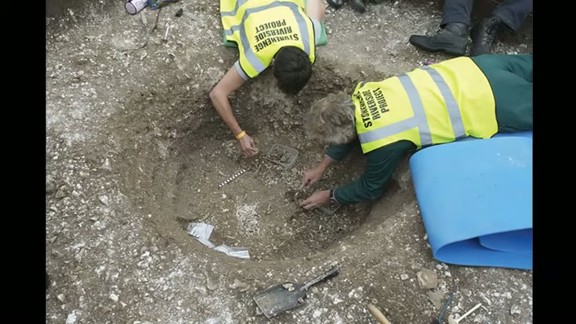
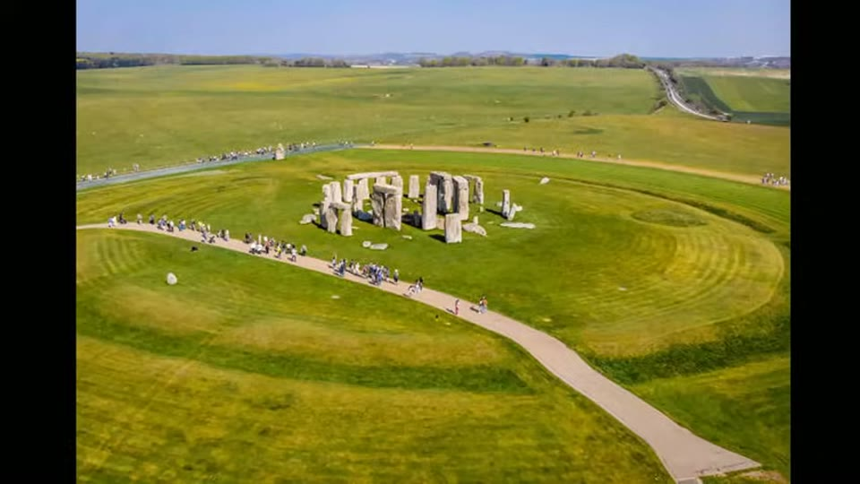
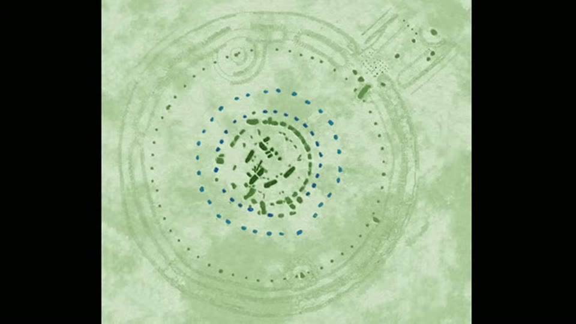
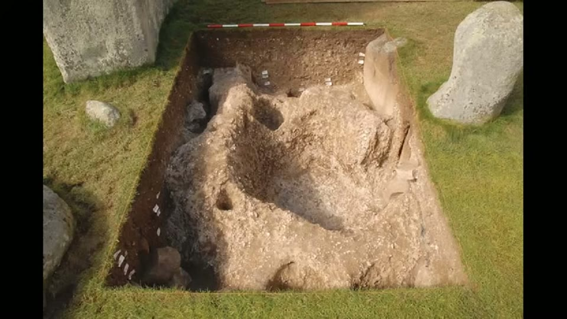
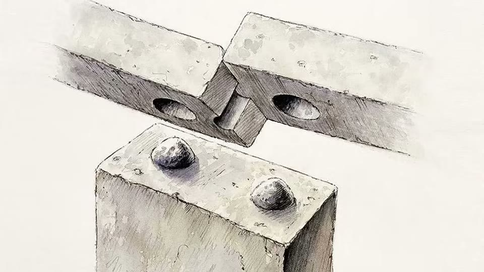
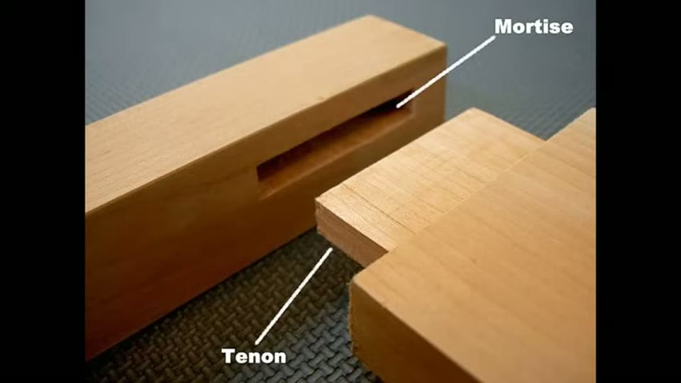
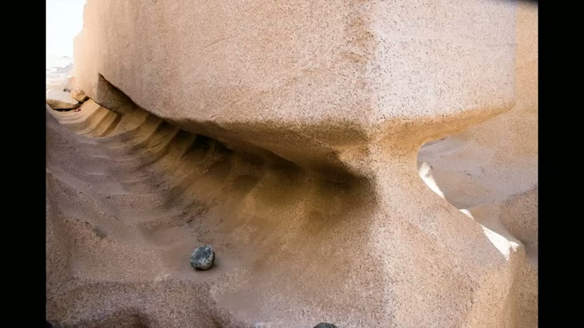
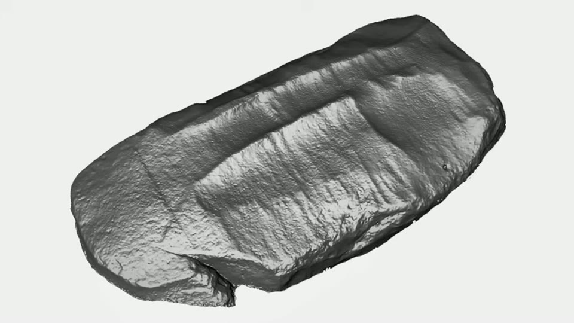
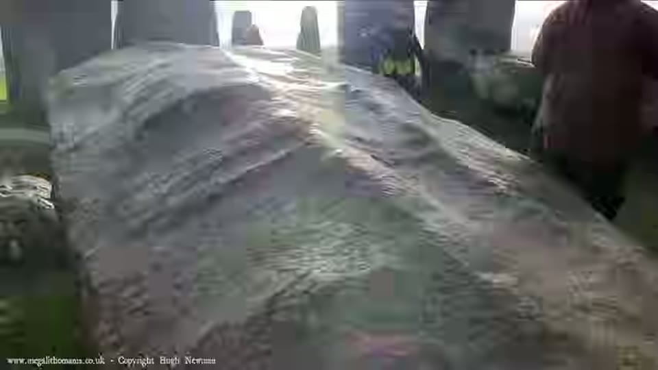

Curious Being
Stonehenge Mystery: Who built it & What Do the Scoop Marks Reveal?
Tina · 22 min · watch on YouTube · summarised 2026-09-26
The video starts from an alternative claim and ends by rejecting it. Online posts had pointed out that one Stonehenge stone appears to carry the same scoop marks as the unfinished obelisk at the Aswan quarry in Egypt 00:04–00:17. She went to check, and most of what she found on the way has nothing to do with tool marks.
The chronology, and why the order matters
Stonehenge was built in phases over more than a millennium, with the last known structural activity around 1600 BCE and no confirmed written record of the monument until 1130 CE 02:47–02:57.
Around 3000 BCE a circular ditch 110 m across was dug into the chalk, the spoil piled into an inner and outer bank 03:01–03:16. The digging tools were red deer antler picks, found at the bottom of the ditch, many showing battering on the back consistent with use as pickaxes. Their radiocarbon dates are what fix the earthwork at 3000 BCE. The same method dates the nearby Cursus earthwork, 500 m north, to around 3500 BCE — five centuries older than the henge 03:50–04:08.
Older still are the Mesolithic pits 04:11–05:39. Four large post holes found in 1966 during work on the visitor car park held pine charcoal dated to about 8000 BCE, five thousand years before Stonehenge began; the posts appear to have been erected and left to rot in place. A 2022 electromagnetic induction survey of the wider region found hundreds of large pits, one of them 10,000 years old, over 4 m wide and 2 m deep, which the researchers suggest was a hunting trap for aurochs, red deer and wild boar — the largest known early Mesolithic pit in north-west Europe. She is careful to say these may have nothing to do with the later monument.
Five hundred years as a cemetery
Inside the ditch is a ring of 56 pits, the Aubrey holes, not visible on the ground today 06:16–07:14. In the 1920s William Hawley excavated 34 of them and recovered 59 cremations and over 45 kg of bone fragments. Later radiocarbon and DNA work dated the cremated remains to a window of roughly 3000 to 2500 BCE — men and women, children and adults, some local and some from western Britain, possibly west Wales. Her reading is that the first phase of Stonehenge was a cemetery, and that the burials coincide with the digging of the bank and ditch rather than following it.
The published estimate from Hawley's work is about 240 individuals, but a later excavation found an intact cremation deposit beside Aubrey hole 7, which suggests his retrieval was incomplete and the total is an undercount 07:52–08:16. Many Aubrey holes remain unexcavated.


Stonehenge held cremated human remains for about five centuries before the large stones were raised, and the count of individuals is probably an undercount.
The 2008 dates, and what they move
This is the part of the video the rest of the argument rests on 08:47–09:22.
Under the turf are two pairs of concentric rings of holes. The Q and R holes sit near the centre and are cut through by the sarsen and bluestone circles, so they predate them. The Y and Z holes ring the outside of the sarsen circle without overlapping it, so they came after, and date to between 1800 and 1500 BCE.
The Q and R holes were long placed at 2600 BCE, with the sarsen circle following at 2500 BCE. Radiocarbon dates from samples taken during the 2008 excavations instead suggest 2400 to 2300 BCE 10:26–10:42. A partial excavation of Q hole 13 found material associated with Bell Beaker pottery rather than Neolithic British culture.
If those dates hold, the major stonework is several hundred years later than the conventional figure, and it falls in a period when the region was occupied by two distinct populations rather than one.


The stone circles cut through the Q and R holes and are ringed by the later Y and Z holes, so the stonework sits between them in sequence whatever the absolute dates turn out to be.
Two populations, and the case for the later one
The two groups are distinguishable on burial custom and on metal 11:12–12:37. Neolithic Britons cremated their dead. The Beaker people practised inhumation, burying the unburnt body. The Stonehenge Archer, deliberately buried in the outer ditch and dated 2330–2300 BCE, was not cremated, and is roughly contemporary with the Amesbury Archer and the Boscombe Bowmen three miles away — all inhumations, all associated with Beaker culture. The Amesbury Archer's grave produced the largest set of artefacts from any early Bronze Age burial in Britain and the country's first gold objects, along with three small copper knives and a kit of flint-knapping and metalworking tools, which she takes to indicate a coppersmith.
She also states the population genetics plainly, and it is the mainstream finding: the two communities lived side by side for about 500 years, rarely having children with each other for at least 300 of them, while sharing and adopting aspects of each other's cultures — and eventually more than 90% of Britain's Neolithic gene pool was replaced 14:08–14:52. Not a sudden violent takeover, a gradual one.
Her conjecture, explicitly labelled as such 15:10–16:26: it was the Beaker people, not the Neolithic Britons, who raised the sarsens. Her reasons are circumstantial and she says so. Large and costly building projects tend to happen when a community has security and surplus, and the Neolithic locals at that moment were losing ground to newcomers. The Beaker burials in the Stonehenge ditch and at Amesbury put Beaker people in occupation of the site by 2300 BCE at the latest, so the Neolithic population may not have had access to it. And a copper or bronze culture had better tools. Her answer to the absence of metal tools at the site is that copper and bronze were valuable and scrap would have been collected and remelted.
One further argument, and it is the most specific one she offers 17:01–17:51: Stonehenge is not a stone circle in the ordinary British sense but a structure, with uprights and lintels joined by mortise-and-tenon joints — a technique essentially reserved for woodwork in that era. Beaker houses were built from timber posts and beams and were typically circular or oval; earlier Neolithic houses in England tend to be rectangular. She suggests the design references a Beaker round house in wood.
The joint itself is never photographed on the monument. What is shown is a drawing of how the joint works and a modern woodworking sample with the two halves labelled, which establishes what a mortise and tenon is without showing the reader one at Stonehenge.


Stonehenge is a jointed structure rather than a ring of upright stones, and the joint it uses belongs to carpentry.
The scoop marks, which she rejects
The claim that prompted the video gets about ninety seconds, and she does not find for it 19:16–20:07.
From online photographs the markings on stone 59a do resemble the Aswan scoop marks. But they lack the uniformly sized, obvious strokes of the Aswan examples; at Aswan the tool that left them was used extensively and everywhere across the excavation, whereas at Stonehenge the marks appear on one face of a single stone. Seen from other angles she describes them as obscure and coarse, losing the scoop-mark look entirely. Her conclusion is that they are more likely dressing marks, and her closing question is the practical one: if the builders had a tool that worked well enough to leave those marks, why is it not on any of the other stones?
The comparison as shown is not like for like. Aswan appears as a photograph of the quarry face; stone 59a appears as a grey three-dimensional laser scan on a white background, which flattens the stone to shape alone and removes colour, weathering and lichen. The photograph of 59a that follows, from ground level, is the one where she says the resemblance disappears — so the two ends of her comparison are being read off two different kinds of image.



The marks on Stonehenge stone 59a resemble the Aswan scoop marks in one photograph and stop resembling them from any other angle — which she reads as dressing marks, not quarrying.
What you can check yourself
- The antler picks and their dates are published, and they are the basis for the 3000 BCE figure for the ditch and 3500 BCE for the Cursus. Both are ordinary excavation reports.
- The Aubrey hole cremation dates — roughly 3000 to 2500 BCE, 59 cremations from 34 holes, over 45 kg of bone — come from named excavations and later radiocarbon work.
- The stratigraphy of the hole rings is a physical relationship anyone can see on a plan. The sarsen and bluestone circles cut the Q and R holes; the Y and Z holes do not overlap the sarsen circle. That ordering does not depend on any date being right.
- The mortise-and-tenon joints are visible on the monument and can be photographed.
- The Amesbury Archer's grave goods are in a museum, including the copper knives and the gold.
- The stone 59a marks can be compared with the Aswan obelisk directly, which is the comparison she is rejecting — a reader can look at both and disagree with her.
What the video does not settle
- The Beaker attribution is a conjecture and she says so. It rests on an argument about which population had the means and the opportunity, not on anything found at Stonehenge that is identifiably Beaker workmanship. No excavation is cited that places Beaker people in the act of building.
- The absence of metal tools is explained rather than evidenced. Scrap being collected and remelted is offered with no metal residue, tool-mark analysis or wear study behind it.
- The mortise-and-tenon argument is a resemblance. That the joint is a woodworking technique and that Beaker houses were round and timber-framed are both true statements; that one explains the other is not established here.
- The 2008 redating is taken as settled. How widely those dates are accepted, and whether they have been contested, is not discussed. The whole chronological case turns on them.
- The scoop-mark rejection is made from online photographs, not from examining stone 59a. She is explicit about this. The same limitation applies to anyone asserting the marks are real.
- "More than 90% of the gene pool replaced" is quoted without its source. The study is not named on screen or in the narration.
- No mortise-and-tenon joint at Stonehenge is shown. The claim is carried by an artist's drawing and by a photograph of two pieces of modern timber labelled Mortise and Tenon. The joints are on the monument and can be photographed; they are not photographed here.
- The two halves of the scoop-mark comparison are different kinds of image — a photograph of the Aswan quarry against a laser scan of stone 59a. Her conclusion is a rejection, so the asymmetry does not inflate a claim, and the two are not matched.